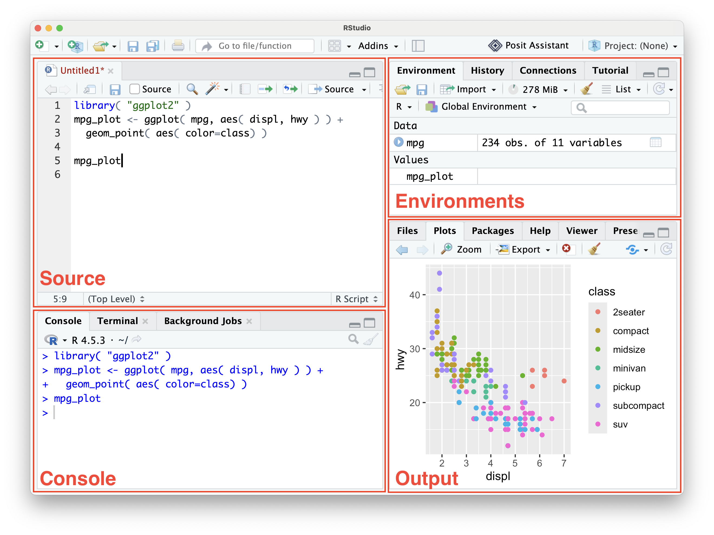

All in One View
Content from Introducing LLMs as a Tool to Learn R
Last updated on 2026-08-27 | Edit this page
Estimated time: 25 minutes
Overview
Questions
- What do I want to learn?
- What AI chatbots are available to me?
- How do I get started with R?
Objectives
- Identify your learning goals
- Choose an AI chatbot
- Understand the basics of R
- Use R to load data
Generative AI As A Learning Tool
Generative models and agents, including LLMs, can be used to automate a wide variety of tasks, at work and in our lives. But automating a task while we are still learning how to do it can limit our learning and our ability to build up more complex and creative skill sets.
We can use AI tools to positively support our learning journey instead. In this class we will explore and practice some ways that we can use Large Language Models to inform, challenge and support us as we learn how to write software code to analyse research data.
Choosing An AI Partner
There are many popular AI models available online, including:
In addition, institutions might run their own, local copies of models like such as DeepSeek or Mistral:
Challenge : What Tools Do We Have
Do you know what Generative AI tools are available and supported in your environment?
Discuss with each other and with your instructor:
- What AI tools have you heard of?
- Which are most often used in your institution/s?
- Are there any special policies that affect your choice?
- Can you access your tool of choice right now?
Consult with your instructor on which LLMs are appropriate to use today and open a session.
Getting Started with R
Why learn R?
We’ll use R in this lesson to practice running code and asking an AI chatbot for help. While we don’t aim to provide a comprehensive introduction to R, there are several reasons why R is a good choice:
- R does not involve lots of pointing and clicking, and that’s a good thing
- R code is great for reproducibility
- R is interdisciplinary and extensible
- R works on data of all shapes and sizes
- R produces high-quality graphics
- R has a large and welcoming community
This list and significant amounts of the content below have been adapted from Data Analysis and Visualisation in R by Southampton Research Software Group licensed CC BY 4.0. For more information, check out the original lesson as well as Data Analysis and Visualization in R for Ecologists and R for Reproducible Scientific Analysis.
What is R? What is RStudio?
The term “R” is used to refer to both the programming
language and the software that interprets the scripts written using
it.
RStudio is a very popular way to not only write R scripts but also to interact with the R software. To function correctly, RStudio needs R and therefore both need to be installed on your computer.
Knowing your way around RStudio
Let’s start by learning about RStudio, which is an open-source Integrated Development Environment (IDE) for working with R.
We will use RStudio IDE to write code, navigate the files on our computer, inspect the variables we are going to create, and visualize the plots we will generate.

RStudio is divided into 4 “Panes”: the Source for your documents containing code (aka “scripts”; top-left, in the default layout), your Environment/History (top-right) which shows all the objects in your working space (Environment) and your command history (History), your Files/Plots/Packages/Help/Viewer (bottom-right), and the R Console (bottom-left). The placement of these panes and their content can be customized (see menu, Tools -> Global Options -> Pane Layout).
R Basics
Running commands
You can get output from R by typing math in the console:
R
3 + 5
OUTPUT
[1] 8R
12 / 7
OUTPUT
[1] 1.714286Assigning values to objects
However, to do useful and interesting things, we need to assign values to objects and name them through variables.
A value is a piece of information that we want to store and retrieve at some later time, i.e. a number, a sequence of numbers, or even collections of data, for now we will start with numbers and later move onto collections of numbers which in R are called vectors.
An object is programming speak for a thing with known properties. You can think of an object as a box with a label, holding the value inside.
A variable is a name that refers to an object. You can use
any name such as x, current_temperature, or
subject_id but we recommend keeping object names explicit
and not too long.
To create an object, we need to give it a name followed by the
assignment operator <-, and the value we want to give
it:
R
weight_kg <- 55
<- is the assignment operator. It assigns values on
the right to objects on the left. So, after executing
weight_kg <- 55, the value of weight_kg is
55. The arrow can be read as 55 goes into
weight_kg.
What is my object?
Once an object is created there are two ways we can get information about that object:
Environment tab – In the Environment tab in the top right of RStudio, ‘weight_kg’ has the type numeric length 1 and value 55. Make sure to keep an eye on the other values that appear here when using RStudio to understand what objects you have. This tab is great for small variables, when inspecting larger or more complicated objects it is better to use more advanced methods we will cover later on.
Print command – When assigning a value to an object, R does not print anything. You can force R to print the value by using parentheses or by typing the object name:
R
weight_kg <- 55 # doesn't print anything
(weight_kg <- 55) # but putting parenthesis around the call prints the value of `weight_kg`
weight_kg # and so does typing the name of the object
Load Data
Gapminder provides data to help people better understand global macrotrends. We’ll use a subset from the gapminder package that contains six variables:
| Column | Description |
|---|---|
| country | |
| year | |
| pop | total population |
| continent | |
| lifeExp | life expectancy at birth |
| gdpPercap | per-capita GDP |
We are going to use the R function download.file() to
download the CSV file that contains the gapminder data. Lets investigate
the download.file() function.
In the R console type help( download.file ) and then
look at the help view that will open on the bottom right. We can see a
description and a list of arguments. We need the first two,
url and destfile.
- url: A character string giving a source URL for the data we use “https://swcarpentry.github.io/r-novice-gapminder/data/gapminder_data.csv”.
- destfile: A character string (or vector) denoting the destination and name for the downloaded data we use “gapminder_data.csv”.
R
download.file(url = "https://swcarpentry.github.io/r-novice-gapminder/data/gapminder_data.csv",
destfile = "gapminder_data.csv")
You are now ready to load the data! We use read.csv() to
load the content of the CSV file as an object of class
data.frame, we can again use help( read.csv )
to learn about the arguments. This time we just need the first argument
file which we give the location of the file
i.e. destfile from before.
R
gapminder <- read.csv( "gapminder_data.csv" )
This statement doesn’t produce any output because, as you might recall, assignments don’t display anything. If we want to check that our data has been loaded, we can check the environment pane in RStudio.
To check the top (the first 6 lines) of this data frame we use the
function head():
R
head( gapminder )
OUTPUT
country year pop continent lifeExp gdpPercap
1 Afghanistan 1952 8425333 Asia 28.801 779.4453
2 Afghanistan 1957 9240934 Asia 30.332 820.8530
3 Afghanistan 1962 10267083 Asia 31.997 853.1007
4 Afghanistan 1967 11537966 Asia 34.020 836.1971
5 Afghanistan 1972 13079460 Asia 36.088 739.9811
6 Afghanistan 1977 14880372 Asia 38.438 786.1134Quickly explore the dataset using the summary()
function:
R
summary( gapminder )
OUTPUT
country year pop continent
Length:1704 Min. :1952 Min. :6.001e+04 Length:1704
Class :character 1st Qu.:1966 1st Qu.:2.794e+06 Class :character
Mode :character Median :1980 Median :7.024e+06 Mode :character
Mean :1980 Mean :2.960e+07
3rd Qu.:1993 3rd Qu.:1.959e+07
Max. :2007 Max. :1.319e+09
lifeExp gdpPercap
Min. :23.60 Min. : 241.2
1st Qu.:48.20 1st Qu.: 1202.1
Median :60.71 Median : 3531.8
Mean :59.47 Mean : 7215.3
3rd Qu.:70.85 3rd Qu.: 9325.5
Max. :82.60 Max. :113523.1 - Choosing which and when to use Generative AI tools require thoughtful goal-setting
- R and RStudio provide a reasonable entry point with a large and welcoming community
- The Gapminder dataset contains global metrics for data analysis
Content from Writing Effective AI Prompts
Last updated on 2026-07-30 | Edit this page
Estimated time: 22 minutes
Overview
Questions
- FIXME
Objectives
- Practice interacting with an AI chatbot
- Use ggplot2 to plot data
- Remember to ask followup questions
Starting A Conversation
An Unpredictable World
Most computer programs are deterministic. Given the same input, they will always produce the same output. So in most software lessons, you can expect the same result when you type along with the instructor.
Generative AI is not deterministic, it is probabilistic, so can produce different results from the same input.
As a result, this class will depend on you and your interaction with your LLM of choice. The instructor can guide and direct you, but the experience is not “right or wrong”.
Imagine that you are an early career researcher. You have spent several months carefully collecting data. But you are now under deadline pressure to analyse the data and produce figures for your next paper. You need to write a script to load the dataset, calculate some statistics and produce visualisations, but you have no idea how to proceed.
Exercise
Open a LLM chat window in your web browser, type in and submit the prompt:
Teach me to code
Look at the output generated by the LLM and reflect on the questions:
- Is the response meaningful and useful?
- Does the response suggest leanring paths for the language you want to learn?
- Can you identify what you would need to learn to solve your specific data analysis problem?
Many LLMs produce comprehensive and helpful answers to this prompt. However the responses are very general. At the time of writing, Microsoft Copilot, for example, proposes a 7 month curriculum for learning data science. It also proposes learning paths specifically for Python and Javascript. If you are interested in R or other data science languages, this might not be the most helpful approach.
Some More Precision
LLMs are trained on a large variety of texts, and can produce an endless array of possible responses to prompts. In order to generate the most useful response, we need to submit as clear and expressive a prompt as possible. The previous prompt had promising output, but was too general. Let’s try something more specific:
TODO: Python vs R alternatives
{prompt} I need to write a script in python to load data, generate statistics and produce figures. What skills do I need to learn to achieve this?
TODO: Consider very different response structures from different LLMs.
Activity 1: Practice interacting with an AI chatbot
Use a chatbot like https://google.com/ai to understand the value of context
- How many years are available?
- “It looks like your question is missing some context”
- How many years are available in gapminder?
- Official Gapminder Platform (300 years) vs Gapminder R / Python Programming Package (55 years)
- How many years are available in https://swcarpentry.github.io/r-novice-gapminder/data/gapminder_data.csv?
- “There are 12 specific years available in that Software Carpentry Gapminder dataset”
Activity 2: Create your first plot (manually)
Load ggplot2
- Introduce
- Install via
install.packages( "ggplot2" ) - Confirm via
library( "ggplot2" )
Activity 3: Ask the chatbot to explain the code
This is my first time using R. Can you explain what this code is doing, line by line? ggplot( gapminder, aes( year, gdpPercap ) ) + geom_point()
What follow-up questions do you have? Some possibilities: - How does it know to plot year on the x-axis? - Why does ggplot use +? - Explain the difference between aes in ggplot and in geom_point as simply as you can
Activity 4: Modify the plot with help
This is my first time using R. Modify this code in the simplest way possible so that [insert modification]. Explain what the changes do.
Some possibilities: - Dots are colored by continent - color=continent - Dots are spread out more and don’t overlap - geom_jitter() - The outlier dots are labeled - geom_text( data = subset( gapminder, gdpPercap > 50000 ), aes( label = country ), color = “black” )
Content from Analysing a Real Program
Last updated on 2026-07-30 | Edit this page
Overview
Questions
- FIXME
Objectives
After following this episode, learners will be able to…
- Run a block of code.
- Trace the flow of a block of code.
- Make small modifications to a block of code and observe how its behaviour changes.
- Prompt a chatbot for an explanation of a line or block of code.
Understanding Existing Code
- introduce some messy script
- important to also (briefly) discuss the way scripts are used: typically run on the command line by an interpreter program. that means learning a bit about file paths.
- a good (AI-free) strategy is to copy out chunks of code and run them, adjust them and run again.
- as long as you do this on a copy, you can always recover the original version
- you will often need to include variables from further up the script.
- with practice, it becomes faster to comment out lines you do not want to run. Most text editors/IDEs provide a keyboard shortcut for this (often Ctrl+/).
- it can be very helpful to insert
printstatements at chosen points throughout the code to give a quick indication of the state of variable(s) during execution. Comment them out as needed and remove them altogether when you are done. - if you need to, add comments as you go to make note of what’s going on.
- (later on in the lesson: when you have a chunk behaving how you want it to, it might be good to capture that as a function.)
- this will help you trace the execution of code, an essential skill for evaluating whether code is doing what you want/need it to even if the code itself is AI-generated (or written by somebody else – or by yourself three months ago!)
EXERCISE here giving learners a chance to practice isolating and interrogating a section of code.
EXERCISE: draw a flow chart describing the code.
- when you get stuck, cannot figure out what a particular block of code is doing, ask somebody.
- paste the code into your chatbot, ask it to explain the code.
Include information about your level of expertise.
- always try to understand it yourself first, or at least make a guess: you will learn more if you can compare the chatbot’s response with the answer you expected.
- if the response includes words you do not understand, ask for a definition (Glosario can be a good source of these too). More on this in the next episode.
- check your understanding and the veracity of the explanation that was generated.
- based on your interpretation of the response, adjust the code, predict what will change in the output/behaviour, then run it and check whether you were right.
EXERCISE or activity here for learners to try identifying a small change to a chunk of code, based on the explanation provided.
if you get an unexpected result, refer back to the explanation you received and the output you observed, and try to identify your misconception. if you cannot find it, explain to the chatbot what you changed, what you expected to see, what you actually got, and ask for clarification. “what am I missing?” rather than “fix it for me”.
bear in mind: sometimes the chatbot will make mistakes! if you don’t seem to be making any progress after trying this for a while, try to find a human to ask, or fire up a new chatbot session to get a “second opinion”.
all of the above is a good strategy if you are getting help from a human too!
what about providing the entire code base all at once? wouldn’t that be quicker than analysing it line-by-line, section-by-section?
it will be harder for you to build you own understanding of the code – it is easier to trace execution through a handful of lines than through hundreds
the explanation you receive may be too high-level, e.g. explaining what the script does but not helping you understand how
or it may be so long that it becomes overwhelming
managing cognitive load by keeping explanations short and taking regular opportunities to test your understanding will aid your learning
this will seem slow at first, but you will be able to move more quickly as you continue to learn
Content from Learning About Programming Concepts
Last updated on 2026-07-30 | Edit this page
Overview
Questions
- FIXME
Objectives
After following this episode, learners will be able to…
- Appreciate how the use of relevant technical terminology in a prompt can influence the style and accuracy of the response generated.
- Identify some strategies to help them build a useful mental model of coding.
What More Can We Learn?
- when you encounter a term or concept that you are not yet familiar
with, take the opportunity to learn more.
- knowing the right vocabulary is valuable so take note of these technical terms to use in future chatbot prompts, search queries, questions to colleagues etc. the language you use in your prompts can significantly influence the quality and specificity of the response you receive.
EXERCISE here for learners to explore how different ways of asking a question can influence the output generated in response.
you should be careful not to disappear down a rabbit hole altogether.
ask the chatbot for advice on prompting more effectively
-
strategies that can reinforce your learning as you go:
- practice, practice, practice: ask the chatbot to generate exercises for you to complete to test your understanding
- draw a concept map: bubbles for concepts and lines connecting them, labelled to describe the relationship(s) between these concepts
EXERCISE for learners to request exercises to reinforce understanding of some coding concept: for loops, maybe? or if/else control flow?
Content from Modifying Code
Last updated on 2026-07-30 | Edit this page
Estimated time: 22 minutes
Overview
Questions
- FIXME
Objectives
After following this episode, learners will be able to…
- Generate a plan of steps to improve a script.
- Execute steps in this plan.
- Evaluate the impact of changes made.
- Articulate the changes the chatbot should make to extend an existing script.
- Reflect on what they are learning and what the chatbot is and is not helping with.
Using What We Have Learned
- it is time to move on from analysing code that has already been written, and begin generating new code
- the knowledge you have gained so far will help:
- conceptual understanding, “computational thinking”, and familiarity with technical terminology will help you write a prompt that is more likely to generate the code you want
- you may be more capable now of anticipating what code you will get back
- ability to trace the flow of the generated code and test+query parts you do not understand will help you evaluate the usefulness of the output (more on this in the next episode)
- back to our messy script: upload whole script to chatbot and prompt
for:
- a plan: what can be cleaned up and how?
- discuss each of these suggestions. are they all useful, relevant? if the chatbot output includes a long list and makes a distinction between recommended and optional steps – do you agree with these suggestions?
- ask the chatbot to execute one of the proposed steps, e.g. clean up variable names
- now re-run the script: is it doing the same thing as it was before?
- a plan: what can be cleaned up and how?
Then an EXERCISE, giving learners the chance to try it out again on their own, e.g. refactor code into functions * (opportunity when looking at functions to call back to earlier “analysing code” episode, where we pulled out chunks and tried them out – often, when you have finished tweaking some code and getting it to do what you want, you should capture it as a function)
- now that the script is clean, we can think about extending the
functionality.
- ask the audience how they would modify the script – what would they want it to do? e.g. adjust the script to use wildcard to capture all *.tsv files in the working directory
- spend some time writing prompt together as a group:
- what info should we include?
- how should we describe the change we want made?
- ask participants what they expect to see in the changes produced?
EXERCISE to allow participants to experiment some more
Follow-up discussion EXERCISE to find out what people learned, where they got stuck, any weird behaviour observed from the chatbot, etc?
Toby: I found myself wondering about version control as I worked on this outline: as learners get more and more into this, they are increasingly going to benefit from viewing diffs of changes being made. the commit history also helps the model (then agent) keep track of what’s been done and why, which facilitates experimentation and work spread across multiple sessions. Where and how can we gracefully introduce this stuff?
Content from Validating What We Have Made
Last updated on 2026-07-30 | Edit this page
Overview
Questions
- FIXME
Objectives
After following this episode, learners will be able to…
- Recognise that evaluation of generated code and validation of results is essential.
- Identify ways to test the code generated by a chatbot.
- Evaluate the importance of testing different parts of the code they generate.
But Is It True?
- Regardless of whether you wrote the code from scratch or generated it with AI, you will held responsible for the results it produces
- LLM models make mistakes. Perhaps not often, and especially not when
working with common libraries, functions, and tasks similar to those
that many people have done in the past.
- (Toby: not really mistakes, since “mistake” implies intent on the part of the mistake maker: “oops, I was wanted to do X but instead Y happened”)
- But, whereas a person might give you some indication when they are not confident that they are giving the right answer/good advice (“I’m not really sure but if I had to guess I would say…” or “You should really ask Jessica that question: she knows a lot more about this stuff than I do…”), the output of your chatbot will project the same confidence and positivity regardless of the relevance or factual accuracy of its response.
- It is up to you to determine whether or not the output generated is accurate and/or does what you need it to do.
- The code tracing/review skills you have picked up in this lesson
will be helpful. But looking at the code is often not enough on its own:
- Once the script/code base gets large, it becomes difficult for one person to keep a complete mental model of how it works, and how any given change will affect the functioning of the whole. (A similar problem exists for the LLM once the code base gets very large: if the size of all the relevant information exceeds the context window of the model, performance can deteriorate as the model “forgets” critical information.)
- It can also be difficult to consider the code that isn’t there. Changes generated by a model might all seem sensible by themselves, but be missing something that later turns out to be important.
- Models perform worse on unusual and niche tasks, those that are not well-represented in their training data. (Toby: find the paper that Greg W shared recently re:model performance vs a benchmark of scientific challenges.) Since research computing tasks are often concerned with questions/data at the limits of current human understanding, you should be prepared to encounter more problems than somebody generating code for more routine tasks in well-trodden territory.
What are some good validation strategies?
- Test your code!
- Minimally, run it on a small, test dataset. Check results carefully. Think first about what you expect to see, and compare the outcome with that expectation.
- Allocate your rigour: consider how crucial each part of the code is, and treat those parts accordingly. For example, routine plotting functions and other standard “boilerplate” is more likely to be generated correctly – and, in the case of the plotting code, errors might be detected quite easily. You might choose to spend less effort reviewing that code. But complex and/or crucial processing and calculations that are particular important for the results you will be reporting from your work merit a much closer look.
- Consider adding some unit tests to your code: that is, code that
tests the correctness of the other code. Programming languages typically
have at least one framework to do this, and automated code generation
has made it much easier and faster to do. Of course, you will also need
to check the tests so that you can be confident that they are correct
and/or testing the right things.
- Toby: I guess unit testing is beyond the scope of this lesson? In which case, I think we should at least point learners towards a resource where they can learn more. Or we could include at least a basic example?
- Bear in mind that scientific code may be more difficult to test: a lot of unit tests are concerned with things that are quite easily and logically testable, e.g. whether the output of a function is a positive integer, whether the function fails gracefully when provided with unexpected values, etc. But results produced by scientific code may need to be tested for their plausibility, e.g. whether they respect the laws of thermodynamics, whether a number fits within a biologically feasible range, etc. You will need to use your own domain expertise to inform this kind of evaluation, and it is worth noting that LLMs lack the kind of mental model of the world and how it works that you apply in your daily work, making them less likely to provide useful output in these cases.
- Ask the chatbot to mark its own homework. Some users have reported good results from asking the chatbot/model e.g. “did you miss anything?”. You could also try starting a new chat session or even opening up a different chatbot/model, providing some context for the project, then asking it to review the code and provide constructive feedback on how it could be improved. (Humans can also be good at this!)
Content from Crafting A Learning Path
Last updated on 2026-07-30 | Edit this page
Overview
Questions
- What am I confident that I know?
- What do I want to know but don’t yet?
- How can I ask for a strategy to master those things?
- What am I missing? What are the gaps in my understanding?
- How can I ask questions that reveal these gaps?
- How can I build more complex skillsets?
Objectives
- FIXME
Ways To Keep The Learning Going
There are a few ways to keep ourselves learning with LLMs, such as
- Writing clear, detailed prompts
- Asking for tuition in a specific way
- Analysing existing code
- Asking for explanations
- Using chat to identify gaps in our knowledge
what to learn next: maybe as suggested prompts rather than (or as well as) links to specific recommended reading
- reproducibility: version control, environment management, reports with Quarto
- more software development skills and principles
- logic? i.e. selection criteria > == != etc and &, |
- agents and AI-forward IDEs, mention security